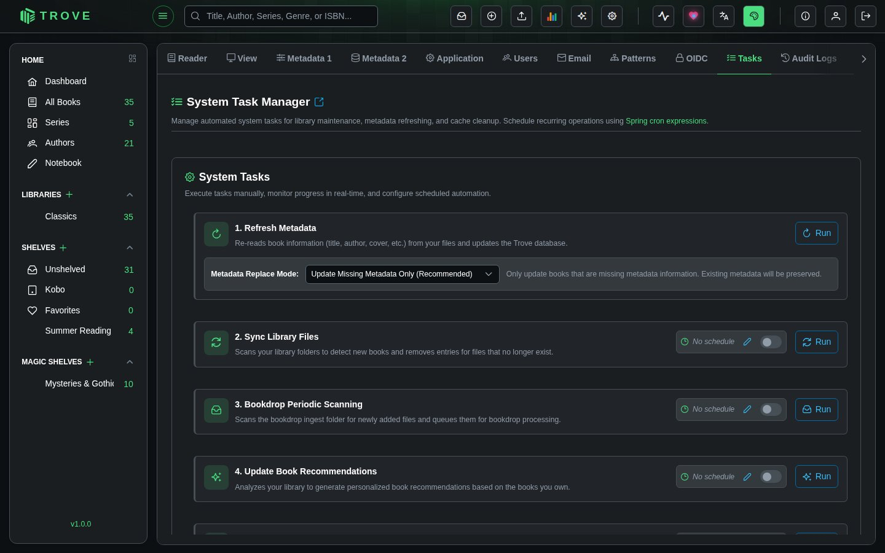

Tasks
Manage automated system tasks for library maintenance, metadata refreshing, and cleanup. Execute tasks manually, monitor progress in real-time, and configure scheduled automation using cron expressions.
Navigate to Settings > Tasks to access this page. Requires the Access Task Manager permission.

System Tasks
Each task can be run by hand or on a schedule.
Refresh Metadata
Re-reads book information (title, author, cover, etc.) from your files and updates the Trove database.
This task has a Metadata Replace Mode option:
| Mode | Description |
|---|---|
| Update Missing Metadata Only (Recommended) | Only fills in missing metadata fields. Existing metadata is preserved. Safe for routine use. |
| Replace All Metadata | Overwrites all metadata for every book with data from the files, even if metadata already exists. Use with caution. |
When to use:
- After editing book files outside Trove
- After bulk imports where embedded metadata needs to be read
- To recover metadata from book files after a database issue
Sync Library Files
Scans your library folders to detect new books and removes entries for files that no longer exist.
When to use:
- After adding or removing files manually on disk
- When library monitoring (watch folders) is disabled
- To reconcile the database with the actual files on the filesystem
Bookdrop Periodic Scanning
Scans the Bookdrop ingest folder for newly added files and queues them for Bookdrop processing.
When to use:
- When Bookdrop isn't noticing new files, for example when its folder is on a network share
- To process files dropped into the ingest folder while Trove was offline
- As a scheduled fallback alongside real-time Bookdrop monitoring
Update Book Recommendations
Analyzes your library to generate personalized book recommendations based on the books you own. Computes similarity scores between all books using text embeddings and stores the top recommendations for each book.
When to use:
- After adding a significant number of new books
- Periodically (e.g., weekly) to keep recommendations fresh
- After major metadata updates that change titles, descriptions, or categories
Cleanup Deleted Books
Permanently removes database entries for books you previously deleted from your libraries. Deleted books are soft-deleted first and this task handles the final cleanup.
A badge shows how many books are pending cleanup (e.g., "Books pending cleanup: 5").
| Trigger | Behavior |
|---|---|
| Manual run | Deletes all soft-deleted books immediately |
| Scheduled run | Deletes only soft-deleted books older than 7 days |
When to use: Run periodically to keep the database clean, or manually after a large batch deletion.
Cleanup Temporary Metadata
Removes temporary metadata records created during the Bookdrop and manual metadata review processes. These are intermediate records that are no longer needed after processing completes.
A badge shows how many records are pending cleanup (e.g., "Metadata rows pending cleanup: 12").
| Trigger | Behavior |
|---|---|
| Manual run | Deletes all temporary metadata records immediately |
| Scheduled run | Deletes only records older than 3 days |
When to use: Run periodically to prevent temporary data from accumulating, or manually after heavy Bookdrop or metadata editing sessions.
Check Book File Integrity
Reads every book file and reports those that are damaged: for EPUB and comic archives it checks every entry against its checksum, and for PDFs, M4B/M4A and MP3 files it checks the file's structure, not just its first bytes. Damaged books are listed in the task's result and the server log so you can re-import them from a good copy.
When to use:
- After moving a library to a new disk or a network share
- If books fail to open, or a reader shows garbled pages
- Now and then, on a schedule, as a check on your storage
Running Tasks
Click the Run button on any task to execute it immediately. While a task is running:
- A progress bar shows completion percentage
- A status message shows what's currently being processed (e.g., "Processing: filename.epub (Library: My Books)")
- A started timestamp shows when the task began
- A Cancel button appears to stop the task
Some tasks (Refresh Metadata and Update Book Recommendations) run asynchronously in the background. Others run synchronously but still show progress. Only one instance of each task can run at a time.
Scheduling Tasks
Every task supports cron-based scheduling. Each task card shows its schedule on the right side:
- Cron expression displayed as a badge (e.g.,
0 45 0 * * 1) - Enable/disable toggle to activate or deactivate the schedule
- Edit button (pencil icon) to modify the expression
Click the edit button to enter a new cron expression. Trove uses Spring cron format with 6 fields:
┌───────────── second (0-59)
│ ┌───────────── minute (0-59)
│ │ ┌───────────── hour (0-23)
│ │ │ ┌───────────── day of month (1-31)
│ │ │ │ ┌───────────── month (1-12)
│ │ │ │ │ ┌───────────── day of week (0-7, 0 and 7 = Sunday)
│ │ │ │ │ │
* * * * * *Common Schedule Examples
| Expression | Runs |
|---|---|
0 0 2 * * * | Every day at 2:00 AM |
0 0 */6 * * * | Every 6 hours |
0 30 1 * * 1 | Every Monday at 1:30 AM |
0 0 3 1 * * | First day of each month at 3:00 AM |
0 0 0 * * 6,0 | Every Saturday and Sunday at midnight |
Task Status
Each task shows its current state with a colored indicator:
| Status | Indicator | Description |
|---|---|---|
| Running | Blue spinner | Task is currently executing with live progress updates |
| Completed | Green dot | Task finished successfully. Shows relative time (e.g., "23h ago") |
| Failed | Red dot | Task encountered an error |
| Cancelled | Orange dot | Task was manually stopped |
| Stale | Orange warning | No status updates received for 5+ minutes. Task may be stuck. |
| Never run | Gray text | Task has never been executed |
Handling Stale Tasks
A task becomes stale when no progress updates have been received for over 5 minutes. This usually means the task is stuck. When a task is stale:
- A warning box appears: "This task appears stuck. No updates received for over 5 minutes."
- The Run button changes to Re-run, allowing you to restart the task
Notes
- All task executions are recorded in the Audit Log with the action Task Executed.
- Tasks run one at a time per type. You cannot start a second instance of a task that's already running.
- Scheduled tasks run as the system user. Manual tasks run as the currently logged-in user.
- Progress updates are delivered in real-time via WebSocket, so you don't need to refresh the page.
- The Refresh Metadata task also requires the Bulk Auto Fetch Metadata permission.